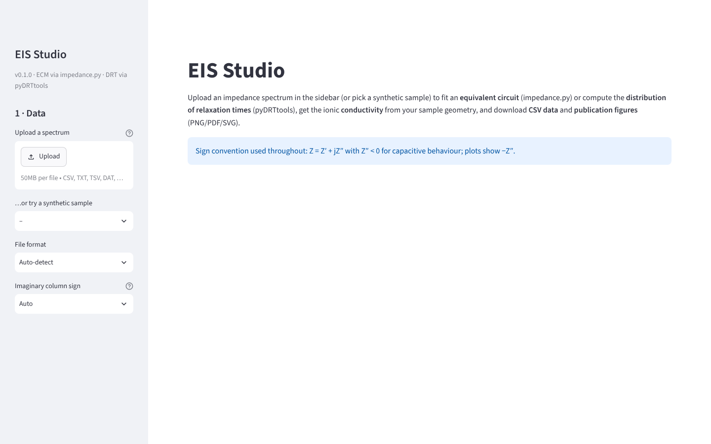
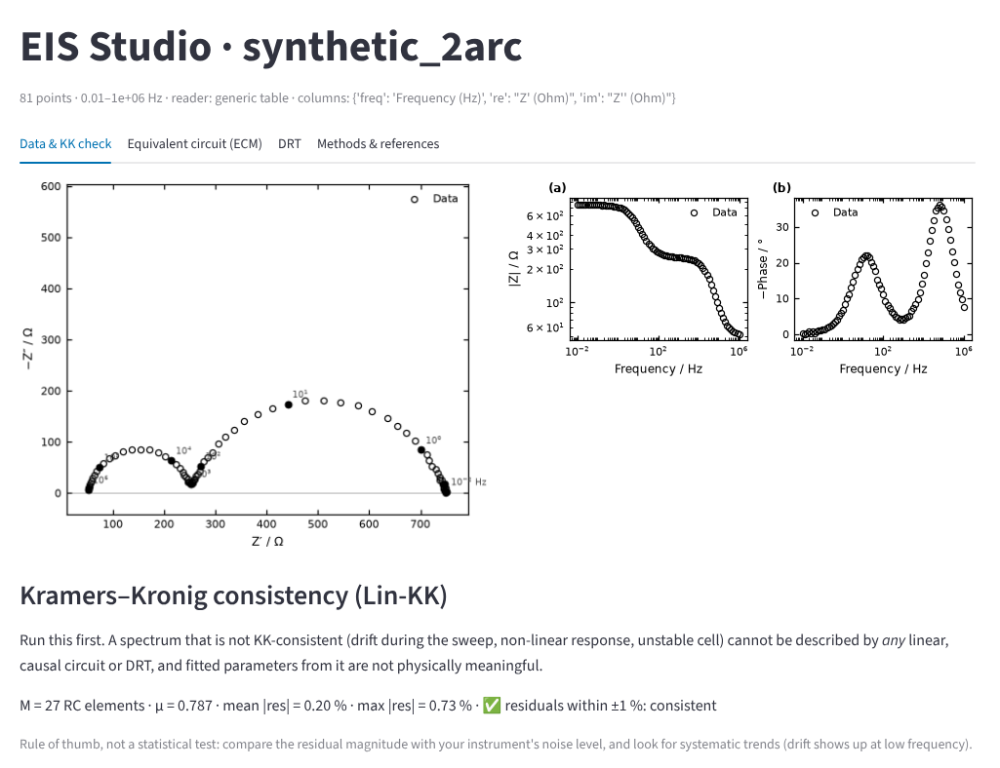
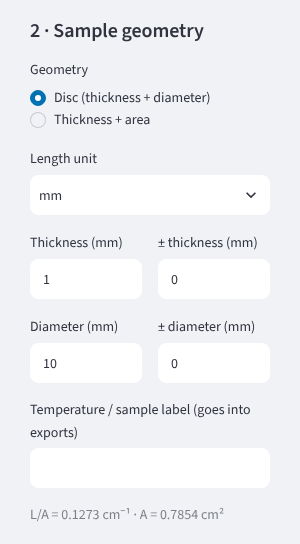
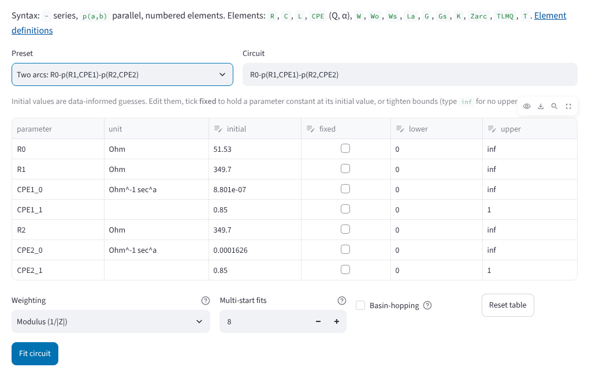
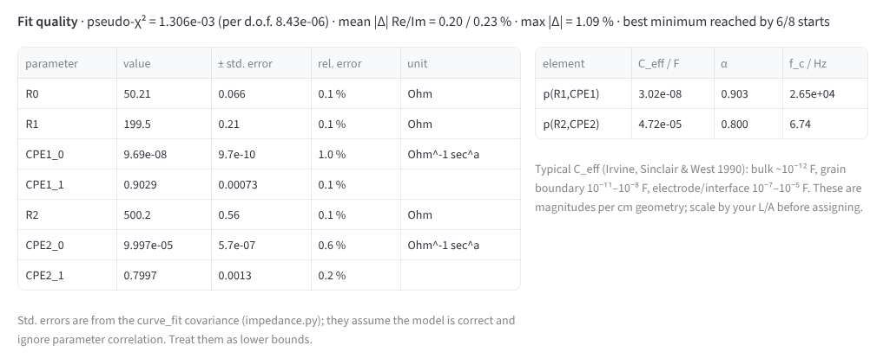
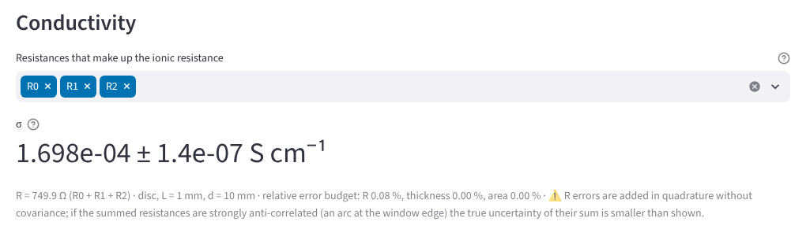
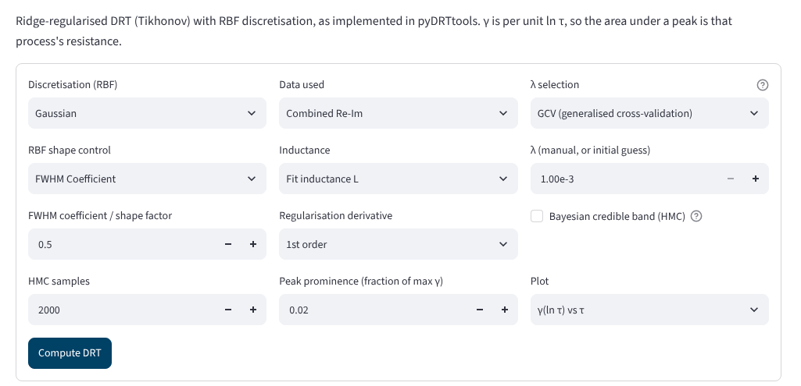
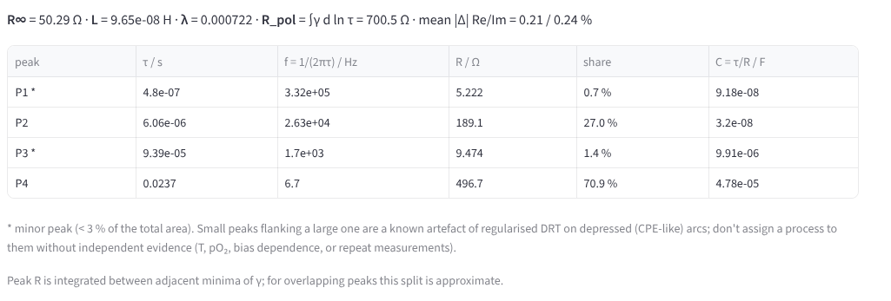
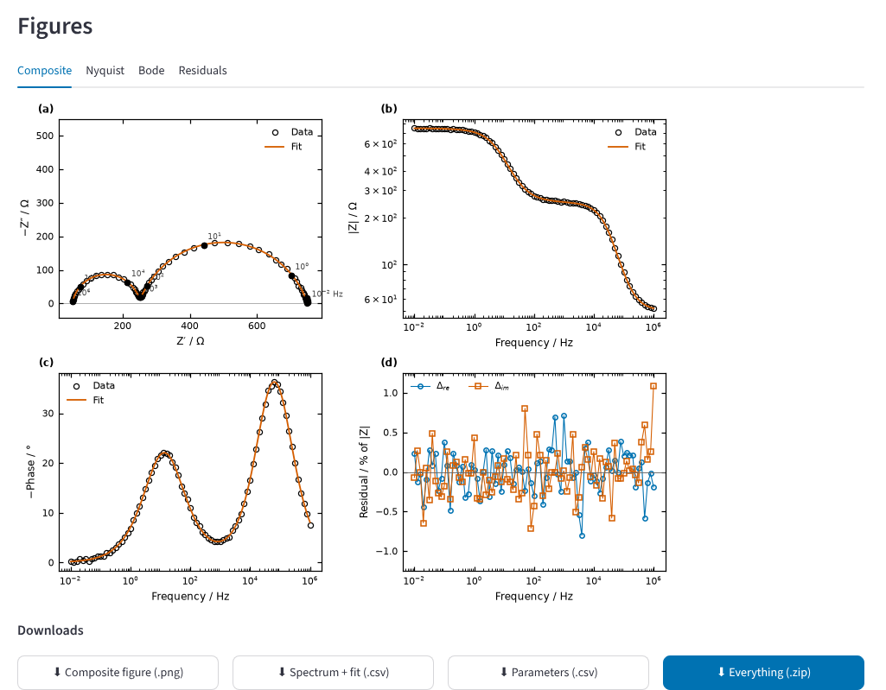

Tutorial
A complete analysis, from file to figure, using the two-arc sample spectrum that ships with EIS Studio. Its true parameters are known, so you can compare your result with the right answer. It takes about ten minutes.
-
Start EIS Studio and load a spectrum
Start the app from its shortcut (see Install). In the left panel, either upload your own file or choose synthetic_2arc.csv under “…or try a synthetic sample”. The sample was generated from R0 = 50 Ω, R1 = 200 Ω with a CPE (Q = 1×10⁻⁷, α = 0.9), and R2 = 500 Ω with a CPE (Q = 1×10⁻⁴, α = 0.8), plus 0.3 % noise.

The start screen. File format, sign convention and column mapping are detected automatically; change them in the left panel only if the reported reading is wrong. -
Check how the file was read, and whether the data are consistent
Under the title, EIS Studio lists which columns it used and anything it converted, such as decimal commas or a −Z″ column. The Data & KK check tab shows the spectrum and the Lin-KK test. Residuals at the level of your instrument's noise, without a trend, mean the spectrum can be fitted meaningfully. A trend at low frequency usually means the cell drifted during the sweep.

Lin-KK mean residual 0.20 %, which matches the 0.3 % noise added to this sample. Use Frequency window in the left panel to drop unreliable points, such as cable inductance at the top end or a drifting low-frequency tail.
-
Enter your sample's dimensions
Give the thickness and the diameter (or the electrode area), with their measurement uncertainties if you know them. They are used for the conductivity and, if you choose, for area-specific (Ω cm²) or resistivity (Ω cm) axes on every figure.

-
Choose a circuit and fit it
In Equivalent circuit (ECM), pick a preset or type a circuit:
-joins elements in series andp(a,b)in parallel. For this sample, choose “Two arcs”. The table fills with starting values estimated from the data; edit them, tick fixed to hold a parameter, or narrow its bounds. Then press Fit circuit.
Multi-start fits repeats the fit from several random starting points and keeps the best. If equally good fits disagree about a parameter, EIS Studio tells you that the data do not determine it. Take that warning seriously before reporting the value.
-
Read the fit
Check the fit quality line first: residuals near the noise level and the best minimum reached by most starting points. Then the parameters: R1 = 199.5 Ω and R2 = 500.2 Ω, against the true 200 and 500 Ω. For each R–CPE pair you also get the effective capacitance, which helps assign an arc to the bulk, grain boundaries or the electrode, and its characteristic frequency.

Under Conductivity, choose which resistances make up the ionic resistance: the bulk alone, or bulk plus grain boundary for the total conductivity.

Solid electrolytes at room temperature. For fast ion conductors (mS cm⁻¹) the bulk arc is usually above the highest frequency your potentiostat measures. Then only the sum R0 + R1 is determined, and that sum is the resistance to use for the conductivity. EIS Studio warns when an arc's characteristic frequency lies outside your data.
-
Compute the DRT
The DRT tab finds the processes in your spectrum without assuming a circuit; it's a good way to decide how many elements your circuit needs. The defaults (Gaussian basis, combined Re–Im data, λ by generalised cross-validation) suit most spectra. Tick Bayesian credible band to see how well each part of γ(τ) is determined.


The two real processes come out at τ = 6 µs (183 Ω) and 24 ms (499 Ω). The two small peaks marked * are regularisation artefacts that appear beside depressed arcs. Blocking electrodes. A capacitive tail has no finite DC resistance, which breaks the DRT model. Set f min above the start of the tail before computing the DRT; EIS Studio warns you if you forget.
-
Export figures and data
Set the figure width (single or double journal column), units, font size and format in Figures in the left panel. Each analysis then offers its composite figure, every single panel, CSV tables and a ZIP with everything in PNG, PDF and SVG plus a settings file.

With your own data
- Analyse one sweep at a time. Files with several cycles get a Sweep selector in the left panel.
- If the Nyquist plot is dominated by a blocking-electrode tail, use Nyquist zoom under Figures to show the arcs.
- Keep the settings file from each ZIP with your raw data; it records exactly how the analysis was done.
- For the equations and conventions behind every number, see Methods.